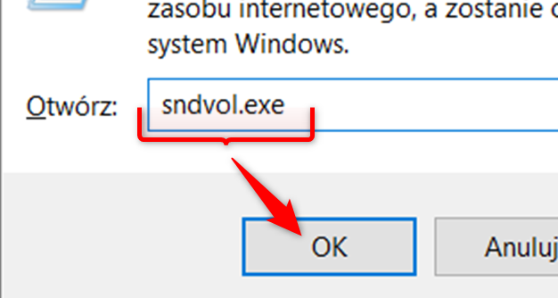
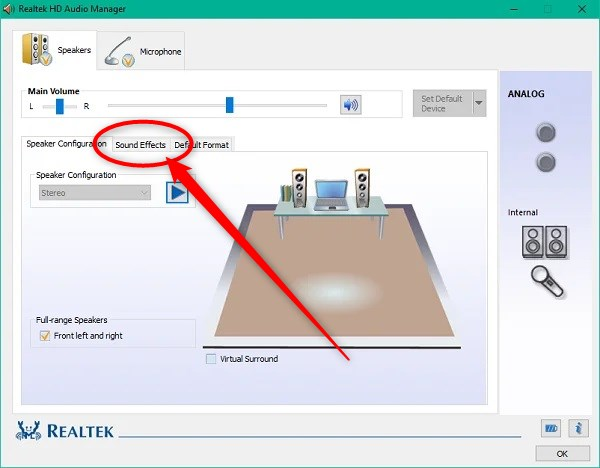
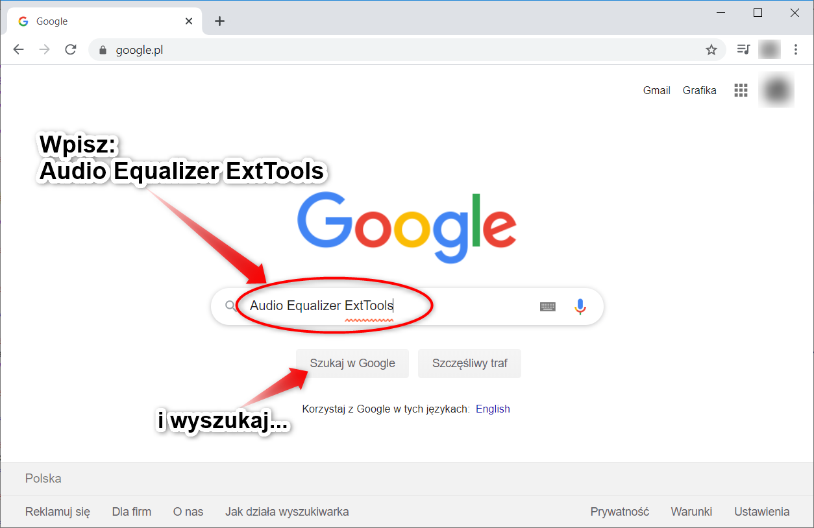
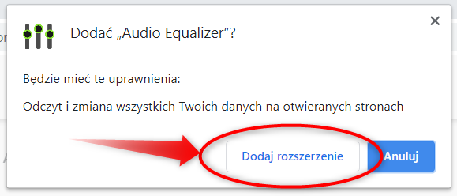

Jak poprawić dźwięk z transmisji?
Jeżeli doświadczasz problemów z niskim poziomem głośności z kamery, informujemy, że od strony technicznej nie możemy obecnie tego poprawić w kościele.
Można jednak usprawnić odtwarzanie dźwięku na własnym komputerze, smartfonie czy tablecie.
Poniżej zaprezentowano 3 metody na poprawę dźwięku na komputerze oraz 1 metodę w przypadku smartfonów i tabletów z systemem Android.
Wszystkie powinny dać wyraźnie głośniejszy dźwięk podczas transmisji.
Poniżej metody na komputer. By przewinąć do metody na smartfon lub tablet, kliknij tutaj.
Metody na komputer
Jeżeli pierwsza metoda nie jest dostępna (np. brak wspomnianych niżej opcji), wtedy należy spróbować kolejnej.
Metoda 1
1. Wciśnij na klawiaturze kombinację klawiszy + :
2. Na ekranie zobaczysz okno jak poniżej:
3. Wpisz w oknie: sndvol.exe następnie kliknij "ok".
4. Na ekranie zobaczysz kolejne okno. Kliknij wskazaną ikonę:
5. Na kolejnym oknie przejdź na zakładkę "Rozszerzenia":
6. Następnie wykonaj kroki pokazane niżej. Docelowo należy włączyć opcję "Wyrównywanie głośności". Bardzo ważne by całość potwierdzić klikając "Ok".
7.
Teraz zamykasz pozostałe okno i to koniec metody 1. Dźwięk powinien być głośniejszy podczas transmisji. Teraz należy tylko to sprawdzić przy następnej okazji.
Nie ma konieczności przeprowadzania kolejnych metod, jeżeli ta przyniesie zamierzony efekt.
Metoda 2
Metoda działa dla osób posiadających narzędzie jak wskazano poniżej.
Narzędzie może się ukrywać pod widoczną strzałką (należy kliknąć) lub będzie wśród ikon obok zegara:
1. Po namierzeniu wskazanej ikony, należy kliknąć ją szybko dwukrotnie.
2. Zobaczysz okno takie jak poniżej lub podobne (może być po angielsku lub po polsku):
3. Teraz należy przejść na zakładkę "Sound Effects" lub po polsku "Efekt dźwiękowy":
Jeżeli nie ma dostępnej takiej zakładki, wtedy porzuć tę metodę i spróbuj kolejnej.
4.
Wśród widocznych opcji należy zaznaczyć "Laudness Equalization" lub po polsku "Wyrównanie głośności".
Następnie potwierdź klikając "Ok":
5.
To koniec metody 2. Dźwięk powinien być głośniejszy podczas transmisji. Teraz należy tylko to sprawdzić przy następnej okazji.
Nie ma konieczności przeprowadzania kolejnych metod, jeżeli ta przyniesie zamierzony efekt.
Metoda 3
Przy tej metodzie wymagane jest używanie przeglądarki Google Chrome.
1. Otwieramy przeglądarkę i wchodzimy na wyszukiwarkę Google. Tam wpisujemy "Audio Equalizer ExtTools" i wyszukaj:
2. W wynikach wyszukiwania wchodzimy na pierwszy link:
3. Na kolejnej stronie kliknij przycisk "Dodaj do Chrome":
4. W kolejnym małym okienku potwierdzamy klikając "Dodaj rozszerzenie":
5. Następnie otrzymamy potwierdzenie dodania rozszerzenia. Zamykamy klikając "x":
6. Za każdym razem kiedy wejdziemy na stronę kamerki należy postępować, jak pokazano dalej.
7. Włączamy głos, ustawiamy na maksimum i aktywujemy pobrane wcześniej rozszerzenie, jak na grafice:
8. Ukaże nam się mały panel, na którym sterujemy wskazanym suwakiem. Przesuwamy go wyżej, jeżeli chcemy zwiększyć głos, odnośnie do potrzeb:
9. Następnie klikamy w dowolne pole poza panelem i oglądamy dalej transmisję.
10.
To koniec metody 3. Dźwięk powinien być głośniejszy podczas transmisji.
Na chwilę obecną brak innych metod. Czytaj dalej, aby poznać jedną metodę do zastosowania na smartfonach lub tabletach (system Android), jeżeli korzystasz z takich urządzeń do oglądania transmisji i na nich również głos jest za słaby.
Metoda na smartfon i tablet z systemem Android
1
 2
3
2
3 4 5
 6
6 7 8 9
10 11 12
13 14 15
16 17 18
19 20 21
22 23